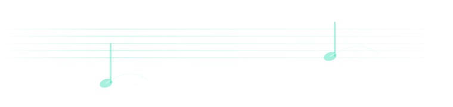

Sem administradorInstalação no seu usuário
SEU PRÓXIMO MOVIMENTOVou começar agora — estou muito empolgado. 🎼Escolha uma direção; eu conduzo o próximo passo.
INSTALAÇÃO NO SEU PERFIL · SEM ADMINISTRADOR
Maestro no seu PC.
Maestro no seu PC.
Sem interromper seu trabalho.
Instale no seu perfil. Seus projetos ficam onde estão.
✓ Sem administrador · seus projetos continuam onde estão
MAESTRO / 01AGENTIC OS · DIGITAL CONDUCTOR
MAESTROAGENTIC OSCONTEXT · EXECUTION · EVIDENCE


 A DIGITAL SECOND BRAIN, CONDUCTED
A DIGITAL SECOND BRAIN, CONDUCTED
Verificação antes de abrirO release é conferido primeiro
Volta seguraAtualizações podem ser desfeitas
ETAPA 02 · COMO COMEÇARComo você
Como você
quer começar?
Escolha uma instalação nova ou uma atualização. O Maestro prepara o caminho certo para você.
ESCOLHA UMA OPÇÃO · OBRIGATÓRIOSelecione uma opção para continuar.
01Conferirrelease e destino
02Instalarno seu perfil
03Prontoprimeiro comando
PROGRESSO DA VERIFICAÇÃOPronto para conferir o release0%
Release autorizadoConfirmando a versão recebida
aguardandoAssinatura e integridadeO conteúdo não foi alterado
aguardandoEspaço de usuárioSem necessidade de administrador
aguardandoi
Se algo falhar, nada será instalado.
!
ETAPA 03 · SEU ESPAÇOPreparar o palco
Preparar o palco
para o trabalho.
Escolha onde o Maestro vai viver.
01Conferirrelease e destino
02Instalarno seu perfil
03Prontoprimeiro comando
PROGRESSO DA INSTALAÇÃOAguardando sua confirmação0%
Detectando seu perfil…
Exclusivo do seu usuário.Ativação segura
- validar o release uma última vez
- ativar o core em uma transação atômica
- manter seus dados locais fora da atualização
!
ETAPA 04 · SEU WORKSPACEVamos preparar
Vamos preparar
seu espaço.
O Maestro sempre começa em um workspace novo e local. As fontes de trabalho entram depois, já dentro dele.
SEU NOVO WORKSPACE
~/Developer/maestro-osFONTES DE TRABALHO
Primeiro criamos o workspace.
Depois que ele existir, o Maestro conduzirá o onboarding e perguntará sobre fontes autorizadas, incluindo SharePoint. O conteúdo ingerido será lido e organizado dentro deste workspace.
EM 20 SEGUNDOS · COMO O MAESTRO CONDUZ
“Preciso preparar uma conversa decisiva com um cliente.”
PRÓXIMO PASSOAlinhar a mensagem aos stakeholders antes de estruturar o material.
Demonstração ilustrativa: nenhum agente, arquivo ou memória foi acionado.
MAESTRO EM MOVIMENTOCriando seu espaço local
Montando estrutura, hooks e manutenção no seu perfil.
ETAPA 05 · PRONTOO palco está pronto.
O palco está pronto.
Agora, conduza.
Seu workspace Maestro está pronto. Claude Code é o caminho principal; Codex continua disponível quando você preferir.
O comando fica apenas como diagnóstico técnico.CONTINUAR NO SEU WORKSPACE
Claude Code é o runtime principal e será aberto já no contexto certo.
i
Você poderá atualizar pelo próprio Maestro. Se algo não parecer certo, o rollback preserva a última versão boa.